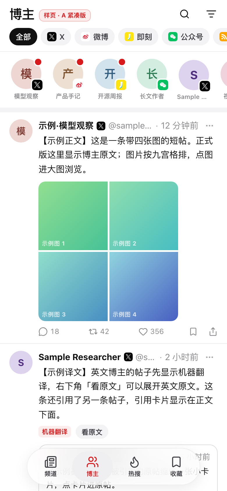
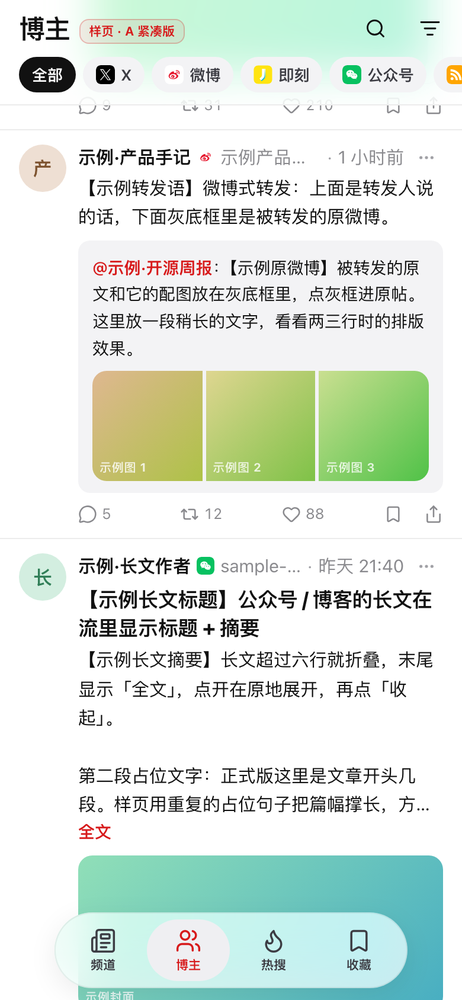
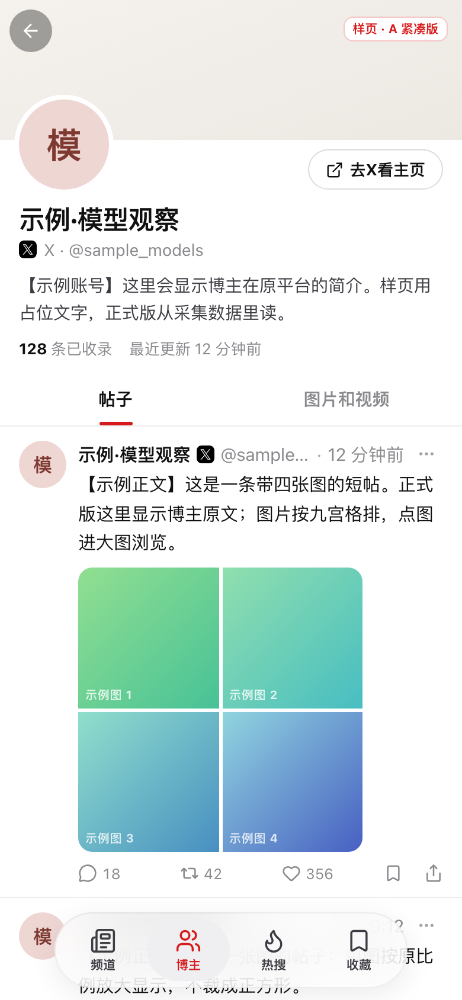
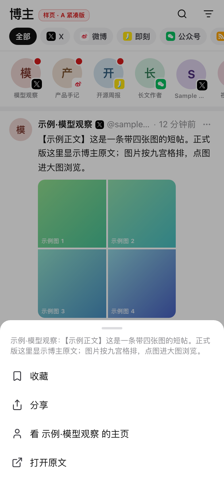
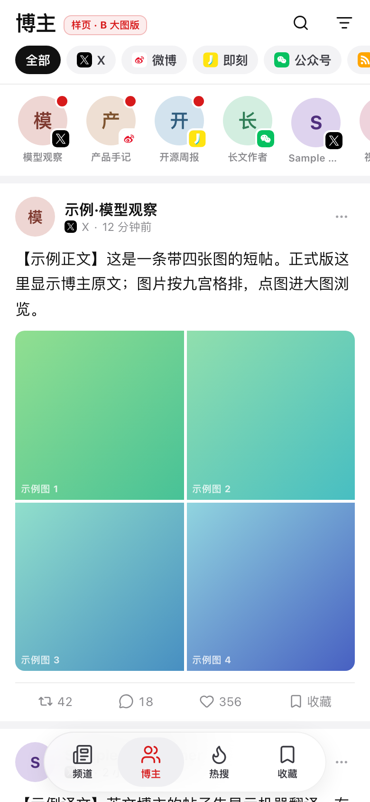
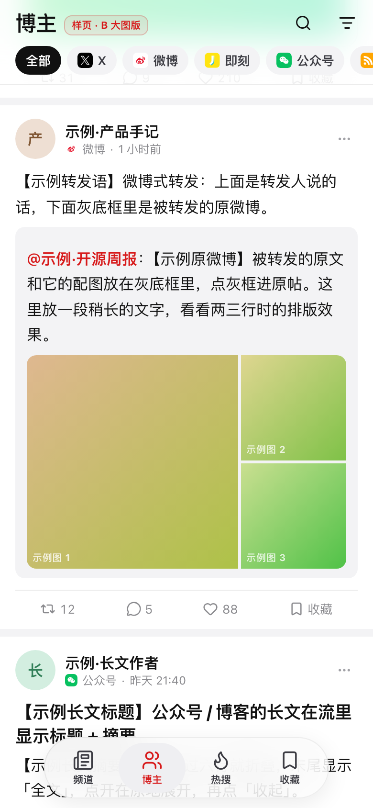
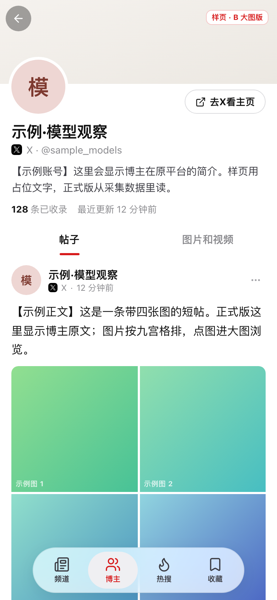
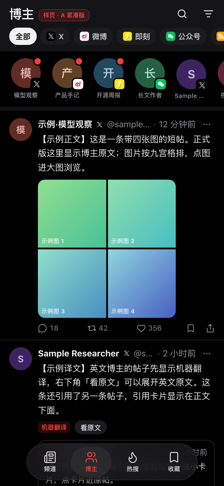
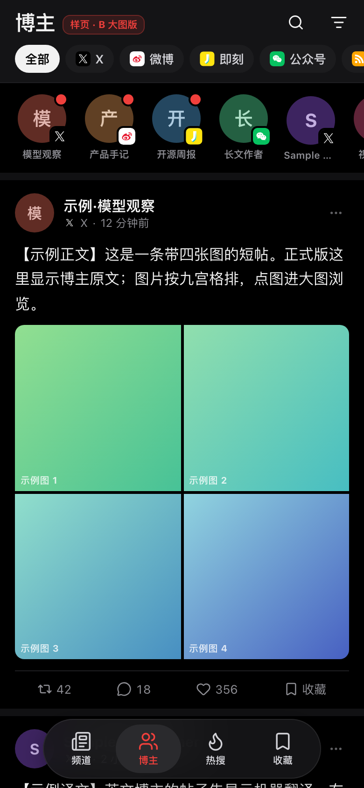

博主页改版样页（第 4 步，只是样页）
对标推特 / 微博手机版：单列信息流 + 点博主进个人主页。全部是示例数据（虚构博主、渐变占位图），不对应真实账号；线上 web-v11 没改。手机打开看效果最准，跟随系统深浅色。
A 紧凑版推特式：头像在左、正文缩进，九宫格小图，一屏能看 2–3 条
B 大图版微博式：头像和名字在上、正文通栏、大图，帖子之间灰色分隔带
个人主页（A）头部资料 + 这个博主的信息流，可切「帖子 / 图片和视频」
个人主页（B）同上，帖子用大图版样式
两版共用
- 顶部：「博主」+ 按平台筛选（全部 / X / 微博 / 即刻 / 公众号 / 博客 / YouTube），往下滑时吸顶；下面一排常看博主头像，红点 = 有新帖，点头像进个人主页。
- 帖子：头像、名字、平台标、账号、时间；正文超过 6 行（B 版 8 行）折叠，点「全文」原地展开；英文帖先显示译文，标「机器翻译」，可「看原文」。
- 图片按条数排：1 张放大、2/4 张两列、3 张及以上九宫格；视频显示封面、播放键、时长；X 的引用是细边框小卡片，微博的转发是灰底框。
- 交互沿用线上：博主页左右滑不切任何东西（左右滑只在频道页换频道）；长按帖子出「收藏 / 分享 / 看博主主页 / 打开原文」；点帖子进现有正文页；底栏 频道 / 博主 / 热搜 / 收藏 不变。
截图（390×844 手机尺寸）









重新截图：uv run --python 3.11 --with playwright python -I docs/rebang-v1/samples/blogger-feed/capture.py docs/rebang-v1/samples/blogger-feed